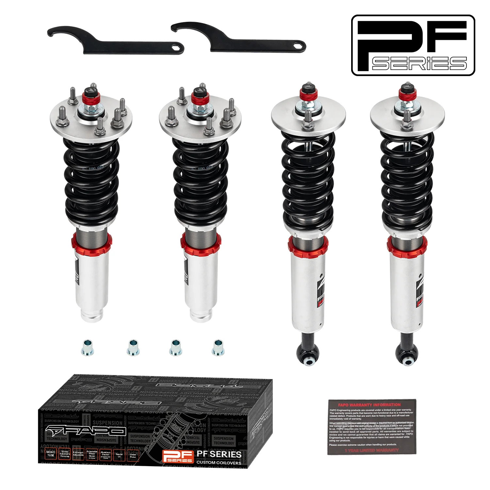

1 / 1232-stopniowe zawieszenie gwintowane Do Acura TL 3rd Gen UA6/UA7 2004-2008 PF012930
Zastosowanie: Acura TL trzeciej generacji UA6/UA7 2004-2008 Zawartość zestawu: Gwinty przednie × 2 szt Gwinty tylne × 2 szt Klucz × 2 szt * Nasz gwint to zestaw obniżający, który będzie o 1-1,5 cala niższy niż wysokość fabryczna, nawet przy maksymalnej wysokości. Przed zakupem potwierdź, że chcesz obniżyć samochód. Cechy produktu: Konstrukcja amortyzatora jednorurowego zapewnia większą pojemność oleju i gazu Regulow…
Application: Acura TL 3rd Gen UA6/UA7 2004-2008 Package Includes: Front coilovers × 2 pcs Rear coilovers × 2 pcs Wrench × 2 pcs * Our coilover is a lowering kit which will be 1-1.5" lower than the factory height even at the max height. Please confirm you want to lower your car before you buy it. Features: Mono-tube shock design, provides larger capacity of oil and gas Adjustable ride height Adjustable pre-load spring tension Hi Tensile performance spring - under 600,000 cycles test, spring distortion is less than 0.04%. Special surface treatment improves durability and performance. All inserts come with fitted rubber boots to protect the damper and keep clean. Improve your handling performance without sacrificing comfortable ride. A fast and affordable way to easily upgrade your car's appearance. Easy installation with right tools. Ideal for any track, drift, fast road, and daily driving. The accessories in the photos are included. Default 1-year warranty for any manufacturing defect, upgrade to 2 years with our Extended Warranty Program. Technical Specifications: Spring rate Front: 8 kg/mm (446 lbs/in) Spring rate Rear: 10 kg/mm (557 lbs/in) Adjustable height: Yes Adjustable camber plate: Only Front coilovers; Rear with standard top mounts Adjustable damper: 32 Levels Adjustable Damper Force
2599,99 PLN
Opis produktu
Zastosowanie:
- Acura TL trzeciej generacji UA6/UA7 2004-2008
Zawartość zestawu:
- Gwinty przednie × 2 szt
- Gwinty tylne × 2 szt
- Klucz × 2 szt
* Nasz gwint to zestaw obniżający, który będzie o 1-1,5 cala niższy niż wysokość fabryczna, nawet przy maksymalnej wysokości. Przed zakupem potwierdź, że chcesz obniżyć samochód.
Cechy produktu:
- Konstrukcja amortyzatora jednorurowego zapewnia większą pojemność oleju i gazu
- Regulowana wysokość jazdy
- Regulowane napięcie sprężyny wstępnej
- Witam Sprężyna o wytrzymałości na rozciąganie - w teście poniżej 600 000 cykli odkształcenie sprężyny jest mniejsze niż 0,04%. Specjalna obróbka powierzchni poprawia trwałość i wydajność.
- Do wszystkich wkładek dołączone są gumowe buty chroniące amortyzator i utrzymujące je w czystości.
- Popraw swoje właściwości jezdne, nie rezygnując z komfortu jazdy.
- Szybki i niedrogi sposób na łatwą poprawę wyglądu Twojego samochodu.
- Łatwa instalacja przy użyciu odpowiednich narzędzi.
- Idealny na każdy tor, drift, szybką drogę i codzienną jazdę.
- Akcesoria widoczne na zdjęciach są wliczone w cenę.
- Standardowa roczna gwarancja na każdą wadę produkcyjną, możliwość rozszerzenia do 2 lat w ramach naszego programu rozszerzonej gwarancji.
Dane techniczne:
- Twardość sprężyny Przód: 8 kg/mm (446 lbs/in)
- Twardość sprężyny Tył: 10 kg/mm (557 lbs/in)
- Regulowana wysokość: Tak
- Regulowana płyta pochylenia: tylko przednie gwinty; Tył ze standardowymi mocowaniami górnymi
- Regulowany amortyzator: 32 poziomy regulowanej siły amortyzatora
Application:
- Acura TL 3rd Gen UA6/UA7 2004-2008
Package Includes:
- Front coilovers × 2 pcs
- Rear coilovers × 2 pcs
- Wrench × 2 pcs
* Our coilover is a lowering kit which will be 1-1.5" lower than the factory height even at the max height. Please confirm you want to lower your car before you buy it.
Features:
- Mono-tube shock design, provides larger capacity of oil and gas
- Adjustable ride height
- Adjustable pre-load spring tension
- Hi Tensile performance spring - under 600,000 cycles test, spring distortion is less than 0.04%. Special surface treatment improves durability and performance.
- All inserts come with fitted rubber boots to protect the damper and keep clean.
- Improve your handling performance without sacrificing comfortable ride.
- A fast and affordable way to easily upgrade your car's appearance.
- Easy installation with right tools.
- Ideal for any track, drift, fast road, and daily driving.
- The accessories in the photos are included.
- Default 1-year warranty for any manufacturing defect, upgrade to 2 years with our Extended Warranty Program.
Technical Specifications:
- Spring rate Front: 8 kg/mm (446 lbs/in)
- Spring rate Rear: 10 kg/mm (557 lbs/in)
- Adjustable height: Yes
- Adjustable camber plate: Only Front coilovers; Rear with standard top mounts
- Adjustable damper: 32 Levels Adjustable Damper Force
FAPO Polska
Ten produkt obsługujemy lokalnie
Autoryzowana obsługa
FAPO Polska prowadzi katalog, kontakt i zamówienia bez odsyłania klienta do zewnętrznych sklepów.
Dobór po aucie
Sprawdzamy dopasowanie produktu do pojazdu, rocznika i wersji przed finalizacją zamówienia.
Wsparcie po zakupie
Masz kontakt w Polsce w sprawach zamówień, wysyłki, gwarancji i zwrotów.